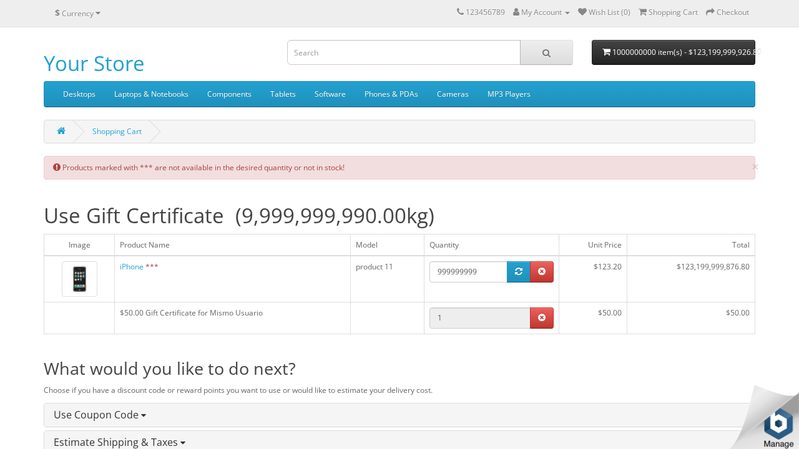
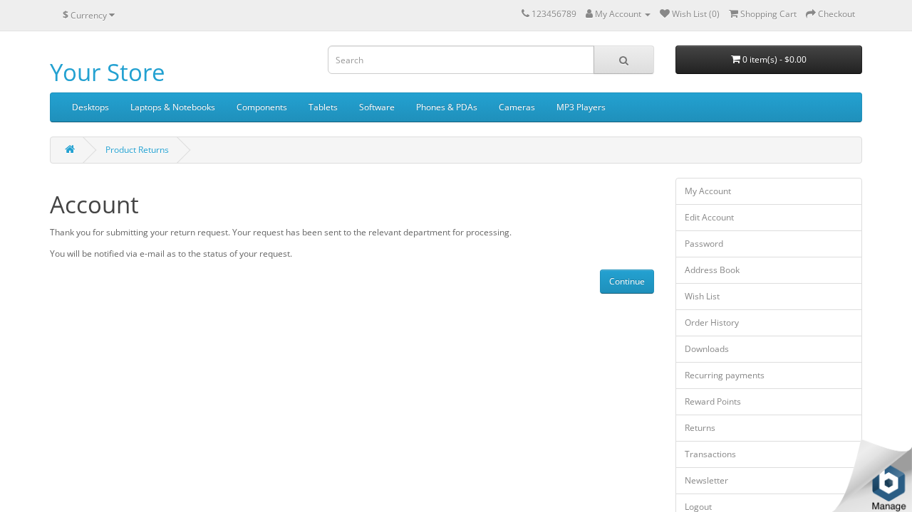
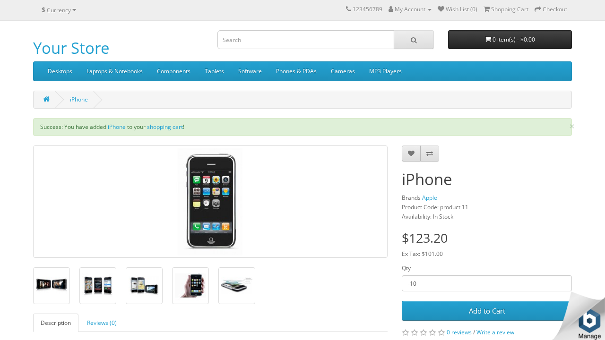
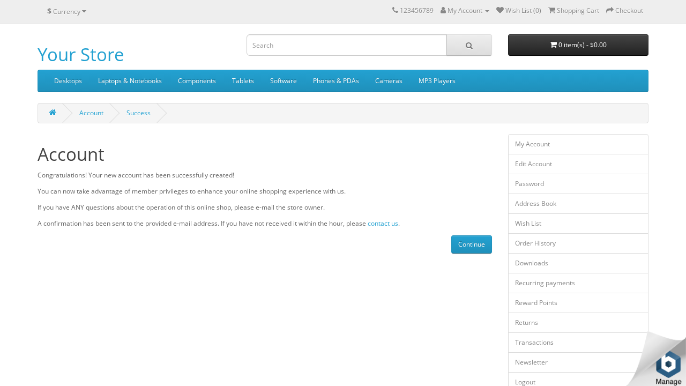
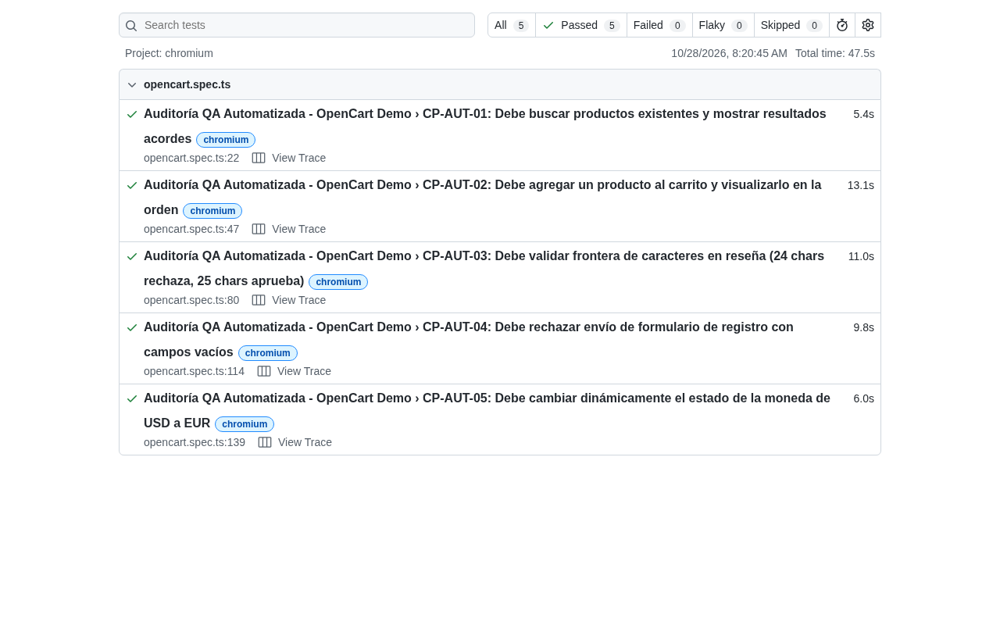

Definición rigurosa de las fronteras de prueba para el Storefront de OpenCart Demo.
Diseño metodológico balanceado con 35 casos de prueba formales.
Verificación del camino feliz (*Happy Path*): búsqueda, navegación, adición válida y autenticación.
Evaluación de robustez ante datos inválidos, cadenas no numéricas, cantidades negativas y omisión de campos.
Fronteras estrictas: reseñas de 24 vs 25 caracteres, vouchers de $0.50 y $1000.01, y cantidades extremas.
Combinatoria de condiciones booleanas en el alta de clientes y formulario de opiniones.
Cambios de estado: carrito vacío a lleno, borrado a cantidad 0, alertas de Wishlist y cambio USD/EUR.
10 defectos reales identificados y respaldados con capturas de pantalla fechadas.
Permite ingresar 999,999,999 unidades sin validación de stock máximo, calculando un total absurdo que desbordaría tipos de datos enteros y pasarelas de pago.

Acepta Order IDs alfanuméricos como ORDEN-INVALIDA y radica solicitudes de garantía sin validar si la orden existe en la base de datos.

Fallas en la experiencia transaccional y captura de datos de clientes.
Al agregar un producto con cantidad negativa, muestra alerta verde de éxito ("Success: You have added...") pero el carrito queda totalmente vacío.

Permite crear cuentas con letras y caracteres especiales en el teléfono (NOT-A-PHONE-NUMBER-123!@#), rompiendo la logística de entrega.

5 flujos transaccionales clave automatizados con TypeScript y ejecución verificable.

Aclaración conceptual rigurosa y reporte de métricas formales.
12 de 14 módulos evaluados mediante la Matriz de Trazabilidad de Requisitos. Supera holgadamente el 50% mínimo requerido.
35 de 35 casos planificados fueron efectivamente ejecutados y registrados en el inventario de pruebas.
5 de 5 técnicas ISTQB cubiertas (Positivas, Negativas, BVA, Tablas de Decisión y Transición de Estados).